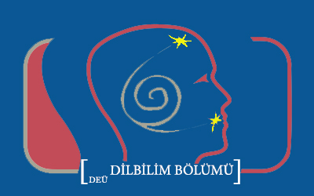

Merhaba, ben Alper Arslan. Tekirdağ'da yaşıyorum. Dokuz Eylül Üniversitesi Dilbilim öğrencisiyim. Uzun bisiklet turları yapmayı ve kod yazmayı çok seviyorum.
Yıldızlararası, Christopher Nolan tarafından yönetilen, epik bilim kurgu türündeki 2014 yapımı bir ABD filmidir. Başrollerinde Matthew McConaughey, Anne Hathaway, Jessica Chastain, Bill Irwin, Ellen Burstyn, Matt Damon ve Michael Caine yer almaktadır.
Yukarıdaki resim Dokuz Eylül Üniversitesi Dilbilim Bölümünün resmi logosudur.